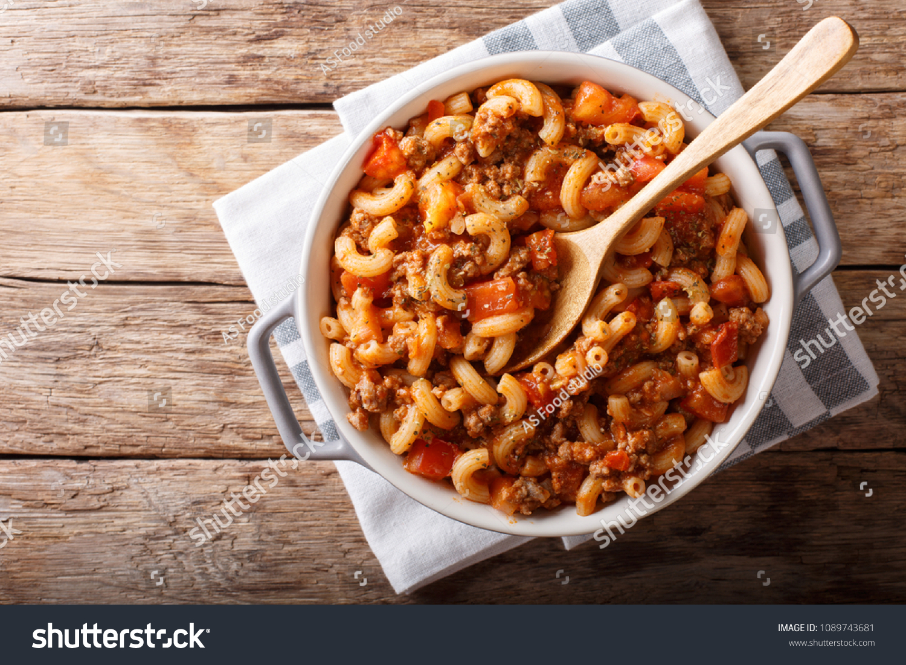

Huerndli and Mince

How to make Huerndli and Mince
Here are the ingredients you'll need
- Minced beef
- Gravy or bratensauce
- Smoked paprika
- Salt
- Pepper
- Huerndli or any other paste shape that isn't noodles
- Carrot
- Butter
- Peas
Instructions
- Brown the mince in a pan
- Add water and gravy powder, stir well and allow to boil for 2 minutes
- Boil pasta in a pan with the peas
- WWhen the pasta is ready, drain and put back into the pan
- Pour mince and sauce into the pasta and mix